iSecSP客户端
目录
1. 关于iSecSP客户端
iSecSP是一款和信安世纪AG/NetIAG安全网关产品配套使用的客户端软件，为移动用户提供灵活的企业应用使用方式，和安全的企业资源及商业敏感资源访问权限，包括浏览器/服务器（B/S）和客户端/服务器（C/S）资源。
该客户端使用简单，用户在主窗口界面创建接入点，并进行简单的相关配置，即可进行连接VPN，享受安全的网络体验。
2. 主窗口
主窗口是iSecSP客户端的主界面。主窗口中包含接入点创建和菜单设置。
2.1 接入点创建
用户可以在创建接入点区域根据需要创建接入点。如果已配置接入点，界面将显示所有已添加的接入点列表。
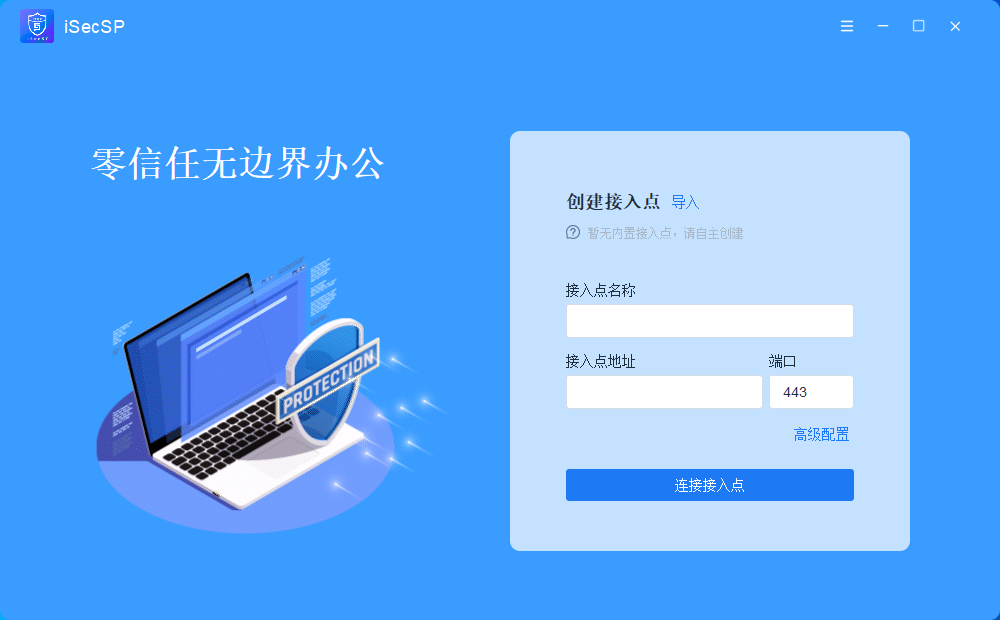
2.2 菜单
主窗口的菜单 ，包含功能为设置、日志信息、一键诊断以及关于。
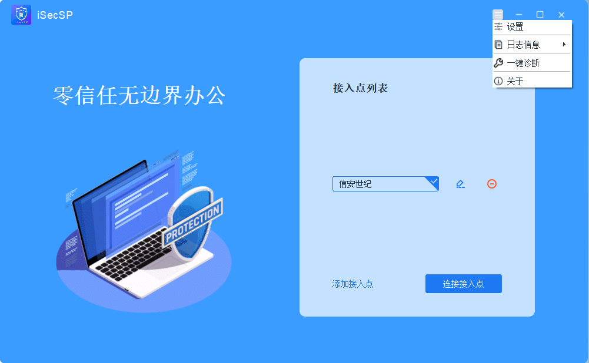
（1）设置
点击该菜单项进行VPN的全局设置。
（2）日志信息
该菜单项提供了日志的相关操作，包括：打开日志目录、生成日志。
（a）打开日志目录
点击该菜单项打开保存日志文件的目录。
（b）生成日志
点击该菜单项生成日志，将日志文件进行压缩，保存到指定路径中。
（3）一键诊断
点击该菜单项进行网络环境、其他环境、应用程序等的诊断。
（4）关于
点击该菜单项获取客户端的相关信息：当前版本、更新版本以及帮助文档。
在主窗口可以按照如下步骤快速启动VPN：
1. 创建接入点
如下图所示，在创建接入点区域输入相关信息创建一个接入点。
2. 建立连接
成功添加一个接入点后，点击连接接入点按钮建立VPN隧道。
（1）连接接入点
VPN建立连接过程中，主窗口会显示"正在进行接入点连接，请耐心等待..."。
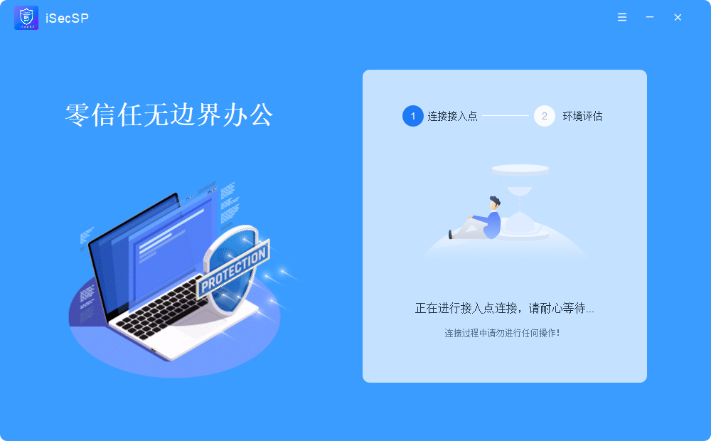
（2）获取认证
在认证界面，选择认证方式，输入相应信息，点击登录按钮进行认证及VPN连接。
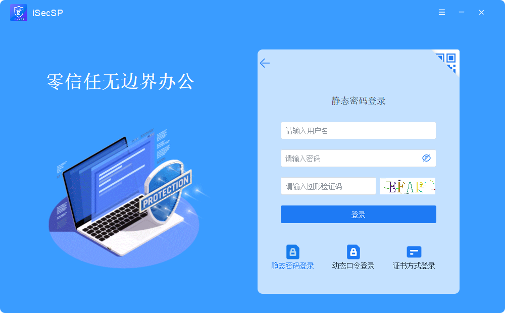
VPN建立连接成功后，客户端会最小化到系统托盘。用户可以通过点击托盘图标 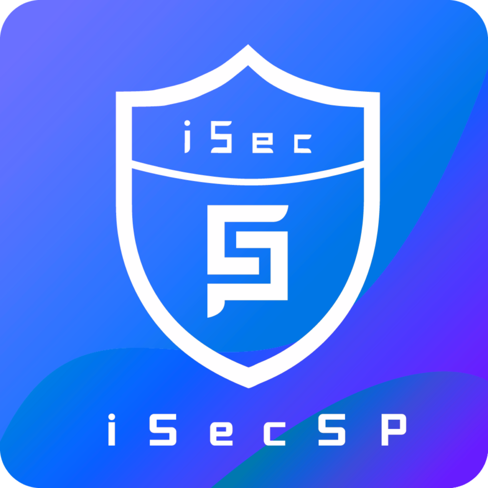 来显示客户端界面。
如果网络或接入点的配置不正确，可能会导致建立VPN隧道失败。VPN建立连接失败，会弹出提示框提示相应的登录失败原因。此类问题，请联系网络管理员或信安世纪客户支持。
3. VPN隧道建立成功
（1）VPN隧道建立成功后，点击左侧菜单栏的应用资源按钮 , 可以查看已配置的应用资源。
（2）点击左侧菜单栏的网络资源按钮 , 可以查看已配置的网络资源。
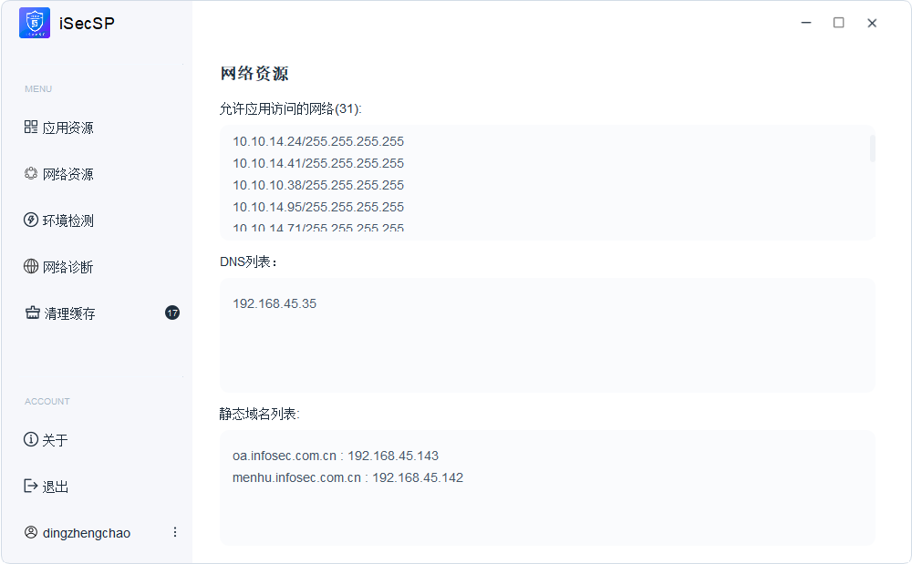
（3）点击左侧菜单栏的环境检测按钮 , 可以进行环境检测。
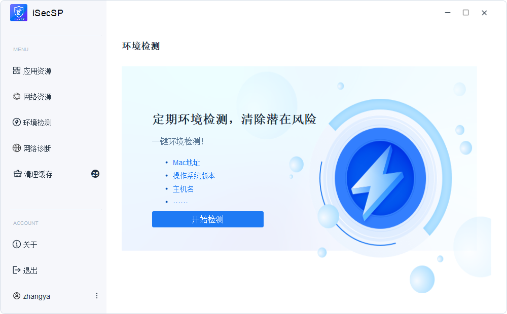
（4）点击左侧菜单栏的网络诊断按钮 , 可以进行网络诊断。
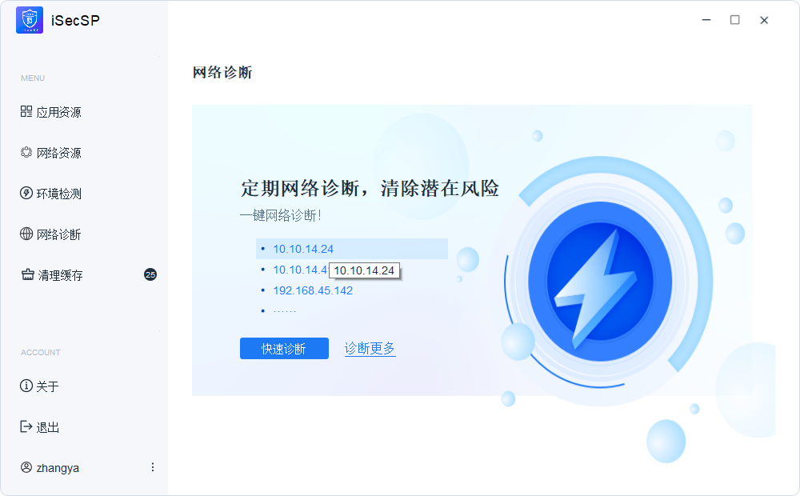
（5）点击左侧菜单栏的清理缓存按钮 , 可以进行缓存清理。
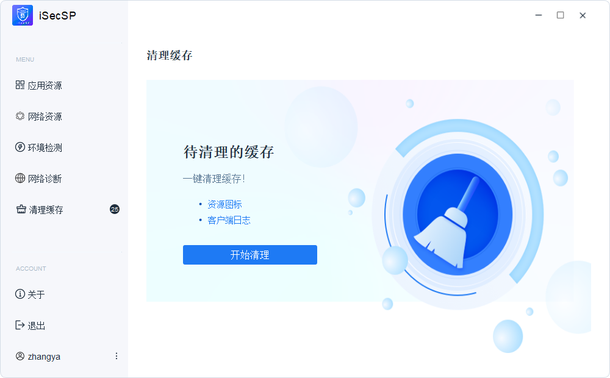
（6）点击左侧菜单栏的关于按钮 , 可以查看客户端的相关信息：当前版本以及帮助文档。
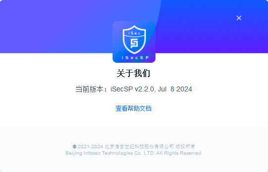
（7）点击左侧菜单栏的退出按钮 , 可以选择断开接入点连接或退出iSecSP。
（a）选择断开接入点连接，客户端将会跳到接入点列表界面，用户可重新选择接入点，进行VPN连接。
（b）选择退出iSecSP，将会断开VPN连接，退出客户端。
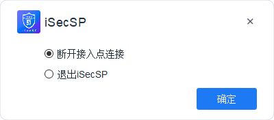
（8） 点击左侧菜单栏的账户信息按钮 , 可以查看当前登录的用户信息。
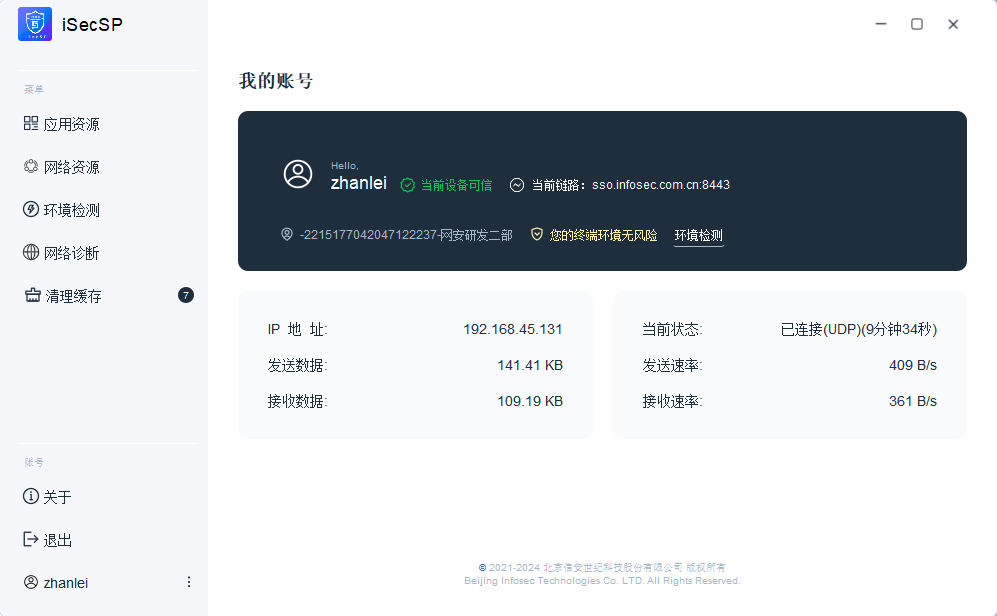
用户可以通过接入点列表界面的添加接入点按钮、 按钮、 按钮来添加、编辑或删除指定接入点的配置文件。
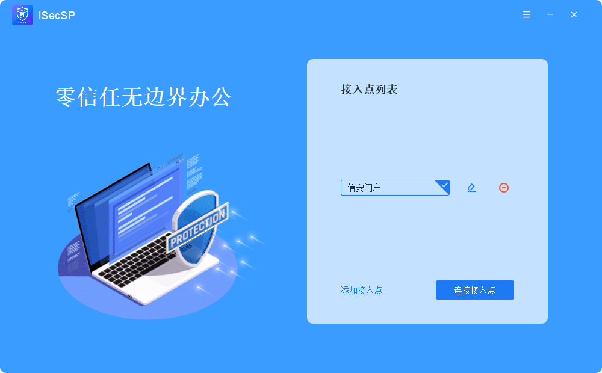
1. 添加接入点
点击添加接入点按钮，将会弹出创建接入点界面。
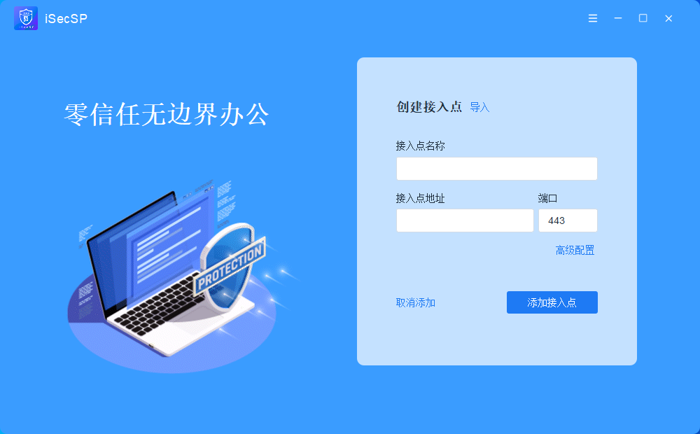
（1）基本配置
接入点名称、接入点地址和端口为必填项。
接入点名称用户可以自定义，需要注意的是，接入点名称不能与已添加的接入点的名称重复。
接入点地址为接入点的主机名或IP地址。
端口默认为443，即SSL连接的默认端口。用户可以根据需要可以修改。需要注意的是，改变端口后，网络连接可能不太好。如果使用一个已经被用于其他用途的端口来建立连接，例如80端口，那么HTTP客户端和SSL客户端都会不工作。为了确保所有功能运行正常，需要设置额外的有关设备和网络的信息。
此外，用户可以根据需要点击导入可选取本地配置文件，自动导入配置文件中接入点信息并返回接入点列表界面。
（2）高级配置
点击高级配置按钮，将会弹出高级配置界面。
（a）初始认证设置
用户点击初始认证设置按钮可开启单包授权SPA功能，且需对SPA相关设置进行编辑。
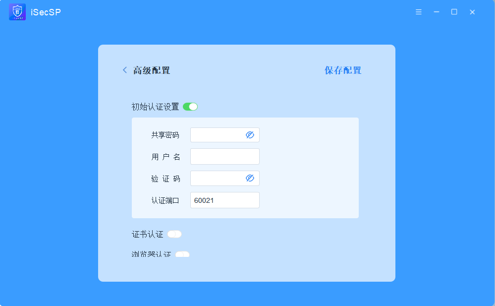
（b）证书认证
用户点击证书认证按钮可开启证书认证功能。包括国密SSL证书和RSA SSL证书，默认选择国密SSL证书。其中，国密SSL证书包括协同证书和手动导入两种方式；RSA SSL证书包括自动检测和手动导入两种方式。
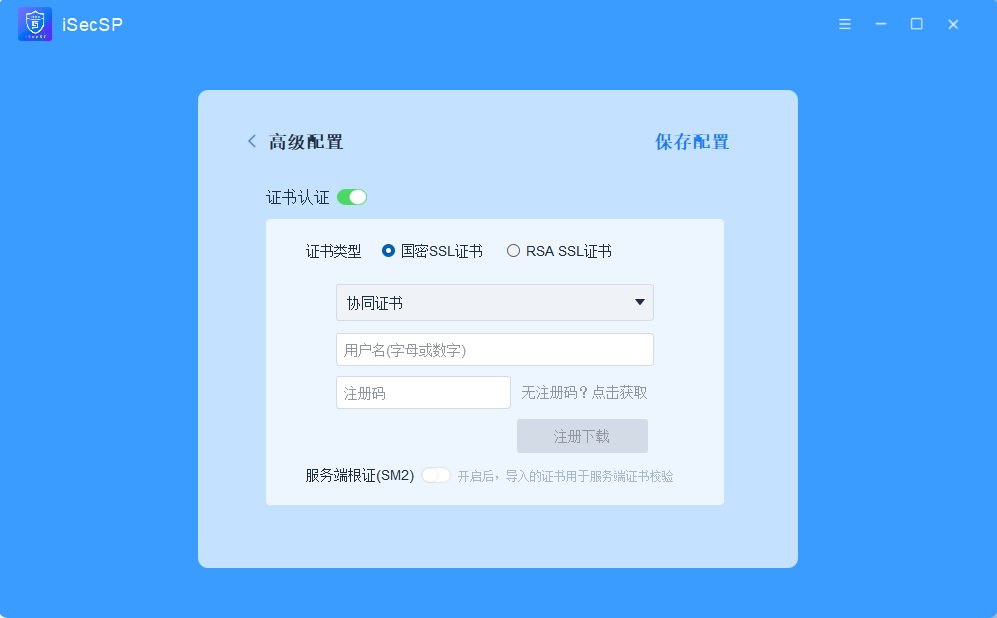
（c）浏览器认证
用户点击浏览器认证按钮可开启浏览器认证功能。包括安全浏览器认证和系统浏览器认证。
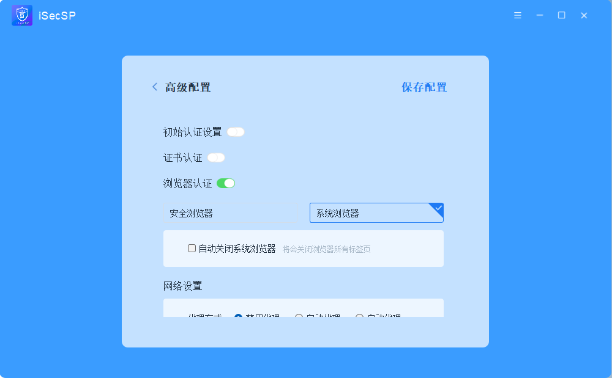
（d）网络设置
代理方式：在未开启SPA时，如果需要使用代理连接到接入点，可在网络设置中启用代理。代理方式包括：禁用代理、自动代理、启动代理。默认情况下，代理是禁用的。禁用代理：可以直接连接到接入点。自动代理：将会使用系统设置的代理服务器。启动代理：和IE的代理设置一样，需要输入代理服务器的IP地址:端口、用户名和密码。
内网探测：如果用户输入内网探测地址:端口并保存，在客户端成功连接VPN后，会通过 TCP协议探测配置的地址，用于判断VPN隧道是否处于建立状态。
重连时间：尝试重连的时间。当勾选了会话失效时自动重连，在客户端成功连接VPN后，若会话失效或断开时，客户端将会重连。
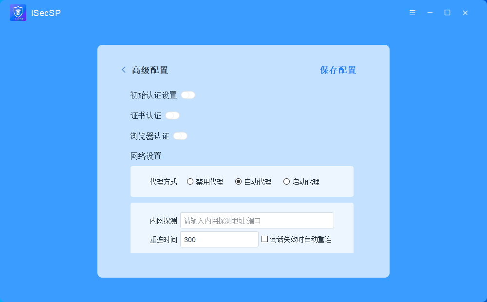
2. 编辑接入点
编辑接入点的步骤和添加接入点类似。想要编辑接入点，在接入点列表界面，点击编辑按钮。之后的步骤和添加接入点相同。
3. 删除接入点
想要删除接入点，在接入点列表界面，点击删除按钮。之后在确认对话框中点击是完成删除。
客户端还提供了全局设置来满足用户需求，其中包括通用设置和高级设置。在标题栏中选择设置 菜单就可以进行全局设置。设置对话框如下图所示。
请注意不合适的设置可能会对网络性能造成严重影响，所以在设置或修改这些选项之前请先咨询网络管理员。
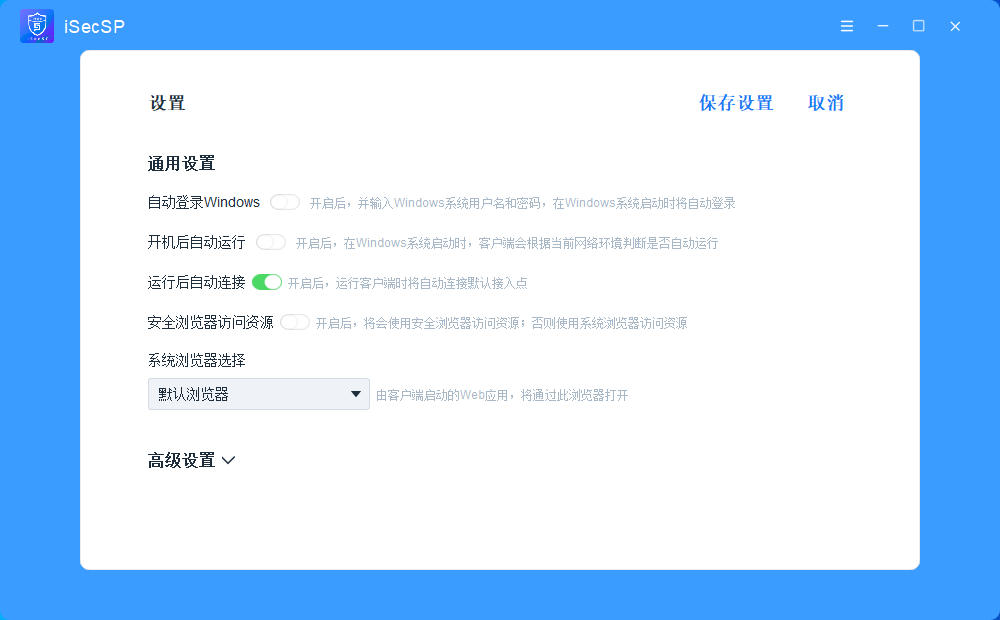
1. 通用设置
（1）自动登录Windows
如果选择该复选框并输入用户名和密码，Windows在启动时将自动登录Windows系统。如果选择自动登录Windows后锁屏，Windows系统在自动登录之后将会锁住屏幕。
（2）开机后自动运行
如果选择该复选框，在Windows启动时，客户端会根据当前网络环境判断是否自动运行。如果选择内网和外网，无论当前网络环境是内网还是外网客户端都会开机自启动。 如果选择只在外网，需要在内网地址和端口中输入一个可以访问的内网地址和端口，只有当前网络环境是外网时客户端才会开机自启动。
（3）运行后自动连接
如果选择该复选框，在客户端启动时，将会自动连接到接入点。
（4）安全浏览器访问资源
开启后，将会启用安全浏览器访问资源；否则使用系统浏览器访问资源。
（5）系统浏览器选择
设置访问Web资源的系统浏览器。
2. 高级设置
（1）虚拟网卡类型
设置建立VPN隧道的虚拟网卡类型，支持六个选项：SSTP、VNIC、VTAP、VNIC-GM、VTAP-GM、WinTUN。
（2）MTU
设置网络环境的最大传输单元。
（3）TCP ACK Frequency
设置TCP ACK的数据包的频率。
（4）VPN隧道协议
设置建立VPN隧道的协议类型，支持三个选项：TCP、UDP、默认。
（5）启动本地网络访问
当AG/NetIAG服务器开启本地网络访问后，可以通过这个复选框开启/关闭这项功能。
（6）连接成功后显示界面
如果选择该复选框，VPN连接成功后，显示iSecSP界面。该功能默认是禁用的。
（7）DNS代理
如果选择该复选框，客户端将会启用DNS代理。默认启用这个功能。
（8）高级域名映射
如果选择该复选框，客户端会将Hostmap配置映射到系统文件Hosts，以加快DNS解析过程。该功能默认是禁用的。点击DNS代理开关2或3次，且DNS代理为开启状态时，即可显示高级域名映射开关。
（9）高级重定向
如果选择该复选框，客户端会将IP地址127.0.0.1加入到本地网卡的DNS服务器列表中（127.0.0.1为主DNS），这样就可以强制转发所有DNS流量到VPN隧道中。该功能默认是禁用的。点击DNS代理开关4或5次，且DNS代理为开启状态时，即可显示高级重定向开关。
（10）禁用代理脚本改写
只有不禁用代理脚本改写时，才可设置代理监听端口。该功能默认是禁用的。
（11）代理监听端口
设置监听的DNS服务器端口。默认60202。
（12）国密SKF证书规则
设置证书规则。支持三个选项：显示最新颁发证书、显示有效证书、显示所有证书。
（13）RSA证书存储位置
设置证书存储的位置。支持三个选项：当前用户、本地计算机、全部。
关于使用iSecSP客户端的更多疑问，请联系信安世纪的客户支持工程师。始终欢迎您对我们产品和服务提出宝贵建议。
联系信安世纪
北京信安世纪科技股份有限公司
官方网站：https://www.infosec.com.cn/
电子信箱：support@infosec.com.cn
地址：北京市海淀区建枫路（南延）6号西三旗金隅科技园2号楼信安大厦
邮编：100096
电话：010-68025518、4006705518
电话联系时间：周一至周五早9点至晚6点